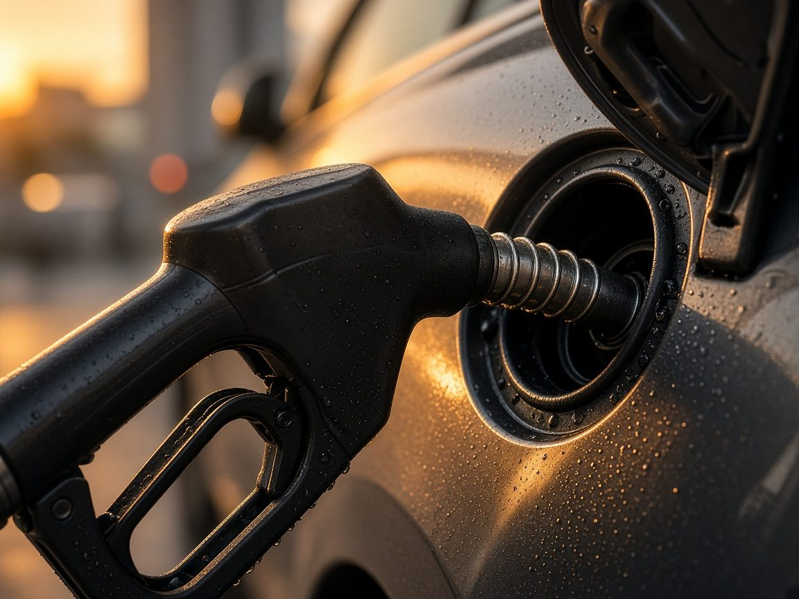

Hay un recibo que nadie te enseña. El surtidor no lo imprime. Y, justo después de la gasolinera, esa cuenta invisible puede notarse también en lo de todas las familias:
- En la comida de cada semana
- En la cita del médico
- En el colegio o en los estudios
- En la ropa que hay que comprar en casa
- Y un largo etcétera
En Casa y Comparativa solemos hablar de lo de casa: la aspiradora, la cafetera, la almohada. Hoy quiero pararme un momento contigo, sin prisa, como si estuviéramos en el rellano o en la cola del súper, a mirar lo que hay detrás de un litro de gasolina. Porque una gasolina más barata hoy puede tener otra cara mañana. Y esa cara no siempre se ve en el surtidor.
Aviso: este artículo es solo información general. No es un consejo financiero, ni una recomendación política, ni un diagnóstico de las listas de espera sanitarias.
Lo que no ves cuando llenas el depósito
Piensa en la última vez que paraste a llenar el depósito para ir al trabajo. Miras el número, echas cuentas con la semana, pagas y te vas. Ese precio no es solo el petróleo que viene de lejos. Dentro de cada litro viaja también lo que se queda el Estado en impuestos. No te llega una factura aparte. Va metido en el precio, y por eso casi nadie se para a pensarlo.
No vamos a llenar esto de números ni a repetir frases hechas sobre cuánto es impuesto y cuánto no. Esas cuentas cambian, y no siempre son lo que se oye por ahí. Lo que sí es verdad es que una parte de lo que dejas en la gasolinera no es solo combustible: es también dinero que entra en las cuentas de todos.
La gente no siempre lo sabe, pero en el surtidor pagas dos cosas a la vez: el viaje que te lleva al trabajo, a dejar a los niños o a hacer la compra, y una parte que va a lo común. Las dos viajan juntas. El ticket no las separa.

Hay un recibo que nadie te enseña. El surtidor no lo imprime.
Cuando el petróleo se puso por las nubes
Este año se complicó el paso de los barcos por ese estrecho por donde sale mucho del petróleo del mundo. El crudo se puso por las nubes. Y, como casi todo se mueve o se fabrica con energía, esa subida no se queda solo en la gasolinera.
La notas cuando vas a hacer la compra y el carrito te sale más caro, aunque hayas cogido lo de siempre: la leche, el pan, lo de siempre de casa. La notas en los libros y el material que pide el colegio a principio de curso, en los zapatos nuevos porque el niño ha crecido otra vez, en la chaqueta que ya no cierra, en el trayecto de cada día. El petróleo está más cerca de la vida cotidiana de lo que parece.
El Gobierno, entonces, hizo algo que a mucha gente le alivió el bolsillo en el momento: dejó de cobrar una parte de los impuestos de la gasolina, para que la subida no llegara entera al surtidor. También echó mano de reservas de combustible, para que no faltara y el precio no se desbocara del todo.
La gasolina subió, sí. Pero la sensación de mucha gente, al ver el precio más contenido, fue de alivio. «Por lo menos esto no se ha puesto imposible», pensó más de uno. Y es comprensible: cuando llega fin de mes, cualquier respiro en el depósito se agradece.
La mancha invisible
Aquí viene lo que casi nadie te cuenta. Ese dinero que el Estado deja de ingresar para que tú pagues un poco menos en la gasolinera no se evapora. Simplemente, deja de entrar en las cuentas de todos.
Con lo que se recauda se pagan, entre otras cosas, la sanidad, el colegio, las carreteras. Eso no quiere decir que el impuesto de la gasolina esté guardado por ley para tu cita del médico: no es así. El presupuesto se parece más a un cajón común. Si entra menos por un lado, hay que apretarse por otro, pedir prestado o cobrarlo de otra manera.
Y eso, en la vida de cada día, puede notarse en lo pequeño. Pides cita al médico y te la dan para dentro de tres semanas. Mientras esperas, sigues haciendo la compra, pagando el material del cole, mirando si la ropa de los niños aguanta una temporada más. Nadie te dice que la espera sea por el petróleo. Nadie te enseña esa cuenta.
Esa es la mancha invisible. No está en el ticket de la gasolinera ni en el volante de la consulta, y sin embargo puede estar en los dos sitios.
Sería injusto afirmar que, por bajar un poco el precio en el surtidor, se atrasó tu cita: las listas de espera dependen de muchas cosas —del personal, de cómo esté organizado el centro, de cuánta gente pide cita, de los presupuestos de cada comunidad— y no hay una prueba de que una cosa causara la otra.
Pero la imagen sirve para entender la idea de fondo: es la misma moneda, solo que puede haber cambiado de bolsillo. Lo que hoy te alivia al llenar el depósito puede aparecer, de otra forma, en la compra de la semana, en la espera de la consulta, en lo que cuesta el material del colegio o en la ropa que hay que reponer en casa cuando los niños crecen.
Esa es la mancha invisible. No está en el ticket de la gasolinera ni en el volante de la consulta, y sin embargo puede estar en los dos sitios.
La pregunta que queda
Entonces la pregunta es sencilla, y no tiene una sola respuesta correcta: ¿gasolina más barata hoy, o unos servicios públicos —el médico, el colegio, lo que nos sostiene a todos— con un poco más de aire para atenderte cuando lo necesitas?
No es que las dos cosas cuesten exactamente lo mismo, ni que se puedan intercambiar como si fueran la misma casilla. Es que las dos se pagan, de un modo u otro, con el mismo cesto. Solo que una la ves en el surtidor y la otra puedes acabar pagándola, en sentido figurado, en la sala de espera, en el pasillo del súper o en la lista de material que manda el cole.
Cada casa hará sus cuentas a su manera. Lo que importa es ver las dos caras, no quedarse solo con la que aparece en el surtidor.
Entender esa cuenta no te convierte en economista. Te ayuda a mirar el precio del litro con otros ojos. Y mirar los precios con calma, como ya contamos en la historia de los precios, también es una forma de cuidar la economía de casa.
Información general, no es consejo financiero ni político. Este texto habla, con calma, de cómo el precio de la gasolina se cuela en la vida de cada día. No recomienda votar, comprar, vender ni tomar ninguna decisión personal de gasto o de inversión. La imagen de la cita médica es un ejemplo para entender un trueque de recursos, no una prueba de que una cosa causó la otra.
Para quien quiera los datos oficiales
Si alguien desea consultar los porcentajes, los tipos y las normas en las que se apoya este texto, aquí están, con su fuente y su fecha.
- Ministerio para la Transición Ecológica y el Reto Demográfico (MITECO) — Precios de carburantes y combustibles. Datos de octubre de 2026. Precio medio de la gasolina 95 en España: 177,3 c€/l (1,773 €/l); precio sin impuestos 119,3 c€/l; Impuesto sobre Hidrocarburos 27,3 c€/l; IVA 30,8 c€/l (21 %); impuestos sobre el PVP: 32,7 %. Media ponderada de la eurozona, gasolina 95: impuestos = 47,3 %. El informe indica que desde el 1 de octubre de 2026 se aplica una reducción temporal del IEH en virtud del RDL 25/2026.
Informe mensual octubre 2026 (PDF) (consultado el 11 nov 2026). - MITECO — Precios de carburantes y combustibles. Datos de septiembre de 2026. Gasolina 95 en España: PVP 189,1 c€/l; IEH 42,3 c€/l; IVA 32,8 c€/l (21 %); impuestos sobre el PVP: 39,7 %. Media ponderada de la eurozona: 48,7 %.
Informe mensual septiembre 2026 (PDF) (consultado el 11 nov 2026). - Comisión Nacional de los Mercados y la Competencia (CNMC) — Boletín informativo de la distribución de carburantes en estaciones de servicio. Julio de 2026 (publicado el 25 sep 2026). En Península y Baleares, los impuestos supusieron el 37,6 % del PVP de la gasolina 95 (cotización internacional 43,7 %; margen bruto de distribución 18,7 %). El 1 de julio el IVA retomó el 21 % (art. 42 del RDL 7/2026). El Impuesto sobre Hidrocarburos de julio (art. 5 del RDL 18/2026) era 15 c€/l inferior al vigente antes del conflicto en Irán.
Informe CNMC julio 2026 (PDF); listado de boletines: CNMC, informes de supervisión (consultado el 11 nov 2026). - Agencia Estatal de Administración Tributaria (AEAT) — carteles de rebajas del Impuesto sobre Hidrocarburos previstas en el RDL 25/2026, de 29 de septiembre (BOE de 30 de septiembre de 2026). Gasolina 95: 47,269 c€/l hasta el 21/03/2026; 27,269 c€/l del 1 al 31/10/2026 y del 1 al 30/11/2026 (diferencia: 20 c€/l).
Cartel AEAT, octubre 2026 (PDF); Cartel AEAT, noviembre 2026 (PDF) (consultados el 11 nov 2026). - La Moncloa — «El Gobierno autoriza liberar reservas petrolíferas para moderar el impacto de la guerra en Irán», Consejo de Ministros de 17 de marzo de 2026. Liberación de hasta 11,5 millones de barriles (12,3 días de consumo nacional); acuerdo de la AIE del 11 de marzo para poner en el mercado 400 millones de barriles en 90 días, ante el bloqueo del estrecho de Ormuz; primera fase española: 3,75 millones en 15 días, desde reservas de la industria, con supervisión de CORES. La vicepresidenta tercera, Sara Aagesen, indicó que el crudo estaba un 60 % más caro y el gas un 54 % más caro que en las semanas previas a la guerra, y que la exposición directa de España era limitada.
Nota de La Moncloa, 17/03/2026. - Ministerio de Hacienda — nota de prensa de 20 de marzo de 2026 sobre el plan de respuesta a la guerra en Irán: IVA de gasolina y gasóleo del 21 % al 10 % hasta el 30 de junio de 2026; Impuesto sobre Hidrocarburos hasta el mínimo permitido por la UE; estimación de 507 millones (IVA de combustibles) y 656,5 millones (IH); plan completo de 5.046 millones de euros (incluye también luz, gas y otras medidas). Son estimaciones anunciadas el 20 de marzo de 2026, no una liquidación posterior de lo realmente dejado de ingresar.
Nota de Hacienda, 20/03/2026. Norma: Real Decreto-ley 7/2026, de 20 de marzo (BOE). - Real Decreto-ley 18/2026, de 29 de junio, por el que se adoptan determinadas medidas en el marco del Plan Integral de Respuesta a la Crisis en Oriente Medio (tipos del Impuesto sobre Hidrocarburos en julio y meses siguientes; el IVA de los carburantes no se prorroga al 10 %).
RDL 18/2026 (PDF consolidado, BOE). - Ministerio de Hacienda — nota de prensa de 29 de septiembre de 2026: rebaja del Impuesto sobre Hidrocarburos de 20 céntimos por litro en octubre, 13 en noviembre y 6 en diciembre, con cláusulas según la evolución del IPC. El cartel oficial de la AEAT para noviembre mantiene, de hecho, la rebaja de 20 céntimos (véase la fuente 4).
Nota de Hacienda, 29/09/2026. Norma: Real Decreto-ley 25/2026, de 29 de septiembre (BOE). - MITECO — «El MITECO libera seis días de reservas de gasóleos y querosenos en el marco de la acción coordinada de la Agencia Internacional de la Energía», octubre de 2026. Liberación de 4,4 millones de barriles de destilados medios hasta el 15 de diciembre; se recurre a existencias mínimas de seguridad de la industria, sin afectar a las existencias estratégicas de CORES. Norma: Orden TED/1100/2026, de 20 de octubre (BOE núm. 262).
Nota de prensa del MITECO; Orden TED/1100/2026 (PDF, BOE).
Lo que no hay, a 11 de noviembre de 2026. No se ha encontrado un dato oficial de cuántos céntimos se evitaron en el surtidor gracias a las medidas (el contrafactual «subió mucho menos de lo que habría subido»). Tampoco hay, a esa fecha, un informe mensual del MITECO o de la CNMC con el peso de los impuestos sobre el PVP medio en noviembre de 2026. Sí está confirmado el tipo del Impuesto sobre Hidrocarburos de noviembre (cartel de la AEAT: 27,269 c€/l). Las cifras de 507, 656,5 y 5.046 millones son estimaciones anunciadas por Hacienda el 20 de marzo de 2026, no una liquidación posterior de lo realmente dejado de ingresar.